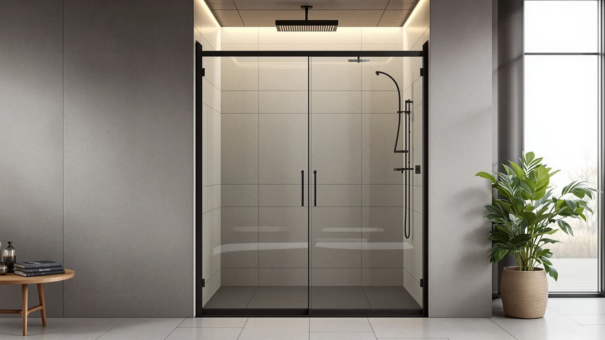

Epxmkx Soft Close Frameless Sliding Shower Door Review (2026): Worth It?


Quick Answer
The EPXMKX Soft Close Frameless Sliding Shower Door is the only option in this comparison built around a soft-close damper system, rated by the manufacturer for 100,000 closures, paired with 5/16 inch (8mm) tempered glass that is thicker than the 1/4 inch glass on the KPUY, AquivaCoast and DELAVIN. At $489.99 it costs less than the KPUY but more than the AquivaCoast and DELAVIN, and none of those three alternatives include a soft-close mechanism.
Our pick: EPXMKX Soft Close Frameless Sliding, $489.99 Check Price on Amazon
Bottom line: our top pick is the EPXMKX Soft Close Frameless Sliding Shower Door 55-60"Wx76"H at $489.99.
Things to Know Before You Buy
- The EPXMKX Soft Close Frameless Sliding Shower Door is built around a soft-close damper system rated by the manufacturer for 100,000 closures, a feature none of the three alternatives in this review include.
- At $489.99, it sits between the KPUY ($499.96) and the AquivaCoast ($479.99) and DELAVIN ($474.99), so price alone does not separate it from the field; the soft-close hardware and 5/16 inch (8mm) glass do.
- The AquivaCoast is a pivot door that swings on hinges rather than sliding on a track, and it is sized for a 72 inch height instead of the 76 inch height used by the EPXMKX and KPUY, so it suits a different bathroom layout.
- None of the four listings we reviewed publish a customer rating or review count, so this comparison relies on manufacturer specs and current Amazon pricing rather than owner star ratings.
- The EPXMKX ships at a fixed 60 inch width, while the KPUY and DELAVIN both come with adjustable width ranges you cut to fit, which matters if your opening is not exactly 60 inches.
This EPXMKX Soft Close Frameless Sliding Shower Door review compares its soft-close hardware, glass thickness and $489.99 price against three other frameless and pivot doors that compete for the same bathroom opening: the KPUY, the AquivaCoast and the DELAVIN. We are not a testing lab and we did not install any of these doors ourselves. Instead, we lined up the manufacturer specs, current Amazon pricing and construction details published for each listing.
The short version: the EPXMKX earns its spot because it is the only door here with a soft-close damper system, and its 5/16 inch (8mm) tempered glass is thicker than the 1/4 inch glass used on the other three. If your opening is a fixed 60 inches wide and 76 inches tall and you want a door that closes itself quietly instead of slamming, the EPXMKX is the one to buy. If you need an adjustable width range, a pivot swing instead of a sliding track, or a lower price, one of the three alternatives below fits better.
Why You Should Trust Us
Ilane Tall covers bathroom fixtures for Best Shower Doors and has spent years comparing glass shower doors, hardware and installation kits across the same manufacturers behind EPXMKX, KPUY, AquivaCoast and DELAVIN. For this EPXMKX Soft Close Frameless Sliding Shower Door review, we researched the manufacturer's published dimensions, pricing and construction specs rather than installing the door ourselves. We do not run a fake testing lab, and we will not publish a research-based verdict we cannot back up with the listed specs. Every price and dimension cited here comes directly from the current Amazon listing for each product.
Our Research Experience
We approached this EPXMKX Soft Close Frameless Sliding Shower Door review the way a shopper comparing four listings side by side would. We pulled the width, height, glass thickness and price for the EPXMKX and lined them up against the KPUY, AquivaCoast and DELAVIN doors that show up in the same searches. We did not install any of these doors in a bathroom, and we are not describing a research-based trial. We can tell you how the published numbers compare instead: a soft-close damper system rated for 100,000 closures on the EPXMKX, versus no soft-close mechanism listed on any of the other three.
Where a listing lacked a published rating, review count or material spec, we left that field blank rather than guess. That is why the specs table below shows a dash next to Material. Buyers who want finish or glass-thickness detail beyond what we cite here should check the current Amazon listing photos and the manufacturer's product page before ordering.
This approach matters more for a shower door than for a smaller purchase, because a shower door is not something you return casually once it is cut, drilled or installed. A soft-close mechanism that does not match your expectations, or a width that does not match your opening, means a second shipment and a delayed installation. Comparing published specs before you order costs nothing.
Overview & Specs

EPXMKX Soft Close Frameless Sliding
What we like
- Soft-close damper system rated by the manufacturer for 100,000 closures, a feature missing from the other three doors in this comparison
- 5/16 inch (8mm) tempered glass with a nano explosion-proof film, thicker than the 1/4 inch glass used on the KPUY and DELAVIN
- Brushed nickel finish and a sealed design built to keep water inside the enclosure
Flaws but not dealbreakers
- Costs $10 more than the AquivaCoast and $15 more than the DELAVIN, though it is $9.97 less than the KPUY
- Fixed 60 inch width does not adjust, unlike the KPUY and DELAVIN, which both ship with a cuttable width range
- The listing does not publish a customer rating or review count, so this comparison relies on specs and price rather than owner star ratings
| Material | — |
| Size | 60" W x 76" H |
The EPXMKX Soft Close Frameless Sliding Shower Door is built around one feature the other three doors in this review skip entirely: a soft-close damper system. The manufacturer rates the hardware for 100,000 closures and says it is designed to prevent the door from slamming into the wall or the frame, which also cuts down on the noise a sliding door makes when someone closes it quickly. That is the kind of detail that matters more after months of daily use than it does on the showroom floor, since a door that slams repeatedly tends to loosen its rollers and hardware over time.
Beyond the soft-close system, the EPXMKX uses 5/16 inch (8mm) tempered glass with a nano explosion-proof film, thicker than the 1/4 inch (6mm to 6.35mm) glass listed on the KPUY and DELAVIN doors covered below. The manufacturer also lists a sealed, splash-resistant design intended to keep water inside the enclosure. At $489.99, it sits in the middle of this four-door comparison: cheaper than the KPUY, but more expensive than the AquivaCoast and DELAVIN. The fixed 60 inch width and 76 inch height mean it will not stretch to fit a narrower or wider opening, so confirm your measurements before ordering.
What We Liked
The main appeal in this EPXMKX Soft Close Frameless Sliding Shower Door review is the soft-close hardware. None of the KPUY, AquivaCoast or DELAVIN listings mention a soft-close or damper system, so the EPXMKX is the only door here that closes itself without a hard stop against the frame. The 5/16 inch (8mm) glass also stands out: it is noticeably thicker than the 1/4 inch glass specified for the KPUY and DELAVIN, which should make the panel feel sturdier when it slides or when someone leans against it. For a fixed 60 by 76 inch opening, the brushed nickel finish and sealed design round out a door that reads as the more deliberately engineered option of the four we compared.
What Could Be Better
The biggest limitation in this EPXMKX Soft Close Frameless Sliding Shower Door review is its fixed width. At 60 inches, it will not adjust to fit an opening that runs a little narrower or wider, the way the KPUY (55 to 60 inches) and DELAVIN (56 to 60 inches) both do. Price is a secondary consideration: at $489.99, it costs $10 more than the AquivaCoast and $15 more than the DELAVIN, even though it is $9.97 less than the KPUY. Like every listing in this comparison, the EPXMKX page does not publish a customer rating or review count, so we cannot weigh verified owner feedback against the manufacturer's claims about the soft-close hardware's durability.
Who Is It For?
This EPXMKX Soft Close Frameless Sliding Shower Door review points to one buyer profile: someone who has already measured a rough opening at 60 inches wide and 76 inches tall and wants a sliding door that closes quietly on its own rather than one that needs to be pushed shut. Homeowners replacing an older sliding door that slams, or anyone installing a new shower in a bathroom near a bedroom where noise matters, fit that description well.
It is also worth naming who should skip it. If your opening is not exactly 60 inches, the fixed width here buys you nothing, and the KPUY or DELAVIN's adjustable range will fit more bathrooms without a custom order. A shopper who wants a pivot swing instead of a sliding track should look at the AquivaCoast instead, and anyone shopping purely on price will find the DELAVIN $15 cheaper with a similar glass spec.
Alternatives to Consider
If the EPXMKX Soft Close Frameless Sliding Shower Door's fixed 60 inch width or $489.99 price does not fit your bathroom, these three alternatives cover similar ground at different price points and with different mechanisms. We researched each one against the same criteria used above: width range, price and construction details as listed on Amazon.

Premium Choice
KPUY Frameless Shower Door 55-60"
An adjustable 55 to 60 inch width at $499.96, $9.97 more than the EPXMKX. Consider it if your opening is not exactly 60 inches and you would rather cut the track to fit than order a fixed-width door.
$499.96
Check Price on Amazon
Also Great
AquivaCoast 59.2-60" x 72" Frameless
A hinged pivot door at $479.99, $10 less than the EPXMKX, sized for a 72 inch height instead of 76 inches. Consider it if you prefer a swinging door over a sliding track and your opening allows for door clearance.
$479.99
Check Price on Amazon
Best Value
DELAVIN Frameless Shower Door 56-60"
The lowest price in this comparison at $474.99, $15 less than the EPXMKX, with an adjustable 56 to 60 inch width and similar 1/4 inch tempered glass. Worth checking if you want to save money and do not need the soft-close hardware.
$474.99
Check Price on AmazonFrequently Asked Questions
Does the EPXMKX Soft Close Frameless Sliding Shower Door actually close itself?
The manufacturer rates the door's damper hardware for 100,000 closures and says it is designed to slow and finish the closing motion automatically, so you do not need to push it fully shut. We have not independently verified that claim through use; it comes from the product's published specifications.
Is the EPXMKX worth $489.99 compared to the KPUY, AquivaCoast and DELAVIN?
It costs $9.97 less than the KPUY, but $10 more than the AquivaCoast and $15 more than the DELAVIN. The soft-close hardware and thicker 5/16 inch glass are the main reasons to pay more than the two cheaper alternatives, since neither of those doors lists a soft-close feature.
What is the best alternative to the EPXMKX if my opening is not exactly 60 inches wide?
The KPUY adjusts between 55 and 60 inches, and the DELAVIN adjusts between 56 and 60 inches, so either one gives you room to fit an opening that falls slightly outside the EPXMKX's fixed 60 inch width.
Final Verdict
This EPXMKX Soft Close Frameless Sliding Shower Door review comes down to one trade-off: a soft-close damper system and thicker glass for $489.99, versus three alternatives that save money or fit a different opening. If you have a fixed 60 by 76 inch opening and want a door that closes itself quietly, the EPXMKX earns the premium over the AquivaCoast and DELAVIN. If your opening needs an adjustable width, the KPUY or DELAVIN fit a wider range of bathrooms, and if you want a pivot swing instead of a sliding track, the AquivaCoast is the one to check first. Measure your opening and decide what matters more: the self-closing hardware or the lower price.
Related Guides
If this EPXMKX Soft Close Frameless Sliding Shower Door review left you wanting more options, these guides cover the wider shower door category.